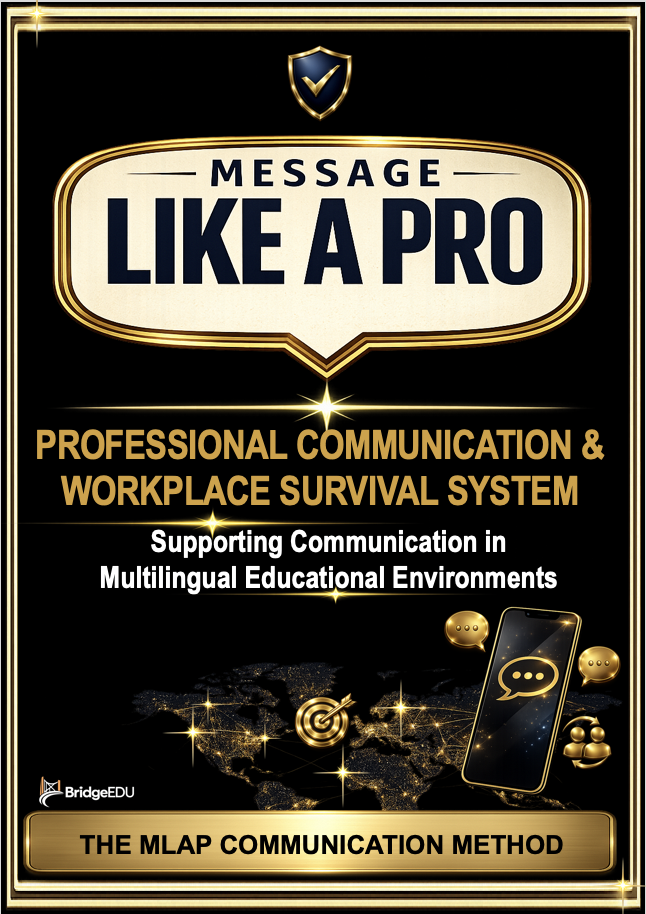

Products
The Message Like A Pro product ecosystem.
Six books, two apps, and a communication method designed to support clearer professional communication in multilingual educational environments.
Message Like A Pro brings together practical communication templates, digital tools, and research-informed communication support for teachers, school leaders, and educational teams.
Ecosystem
Not one product. A connected communication support system.
The books provide structured guidance. The apps provide faster access. The MLAP Communication Method connects the ecosystem through communication support, clarity, and outcomes.
Book Collection
The Message Like A Pro books.
The collection supports different communication situations across school environments, from daily messages to leadership communication, conflict, pressure, and wider professional communication support.

Daily School Communication
Essential communication templates for daily school communication with foreign teachers.

At Work
Professional communication templates for school leaders working with foreign teachers.

Difficult Situations
Communication support for difficult school situations and moments when things go wrong.
In Conflict
Clear communication templates for behaviour, conflict, accountability, documentation, and follow-up.

Under Pressure
Communication support for urgent, high-stakes, and time-sensitive school situations.

Professional Communication & Workplace Survival System
The complete MLAP communication system, including the MLAP Communication Method.
Digital Tools
Two apps. Two connected purposes.
The apps extend the books into practical digital support, giving users faster access to communication guidance when they need it.

MLAP App
A fast-access communication support tool connected to the MLAP professional communication system.
- search by situation
- browse communication categories
- save useful templates
- copy professional messages quickly

BridgeEDU App
A digital support tool connected to the wider educational book collection and classroom support ecosystem.
- supports Books 1–5
- educational communication support
- teacher-focused tools
- practical classroom resources
The books deliver guidance.Message Like A Pro ecosystem principle
The apps deliver access.
The system supports communication outcomes.
How It Connects
One ecosystem built around communication support.
The Message Like A Pro collection supports practical school communication. The MLAP Communication System provides the deeper method and structure. The apps make the support faster to access in real situations.
Explore The SystemThe ecosystem includes:
- six communication books
- two digital apps
- communication templates
- the MLAP Communication Method
- research-informed positioning
- future workplace support tools
Next
Explore the communication system behind the products.
The products are delivery mechanisms. The wider value of Message Like A Pro is the communication support system behind them.
View The Method